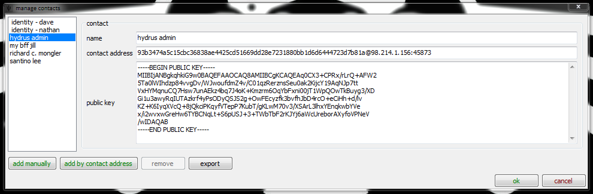

messaging, you say?
Caveat: this is a mess. I'll get round to improving it sometime.
Secondly: I use encryption to protect your privacy. Although I am confident my code is mostly good, cryptography is really difficult to get 100% right. I use the right random number generator and key lengths and everything, but don't work under the assumption a dedicated and well funded attacker will never be able to break what I have done. I can guarantee your guildmaster will not be able to read your messages, not the NSA. Don't Do Drugs™.
ok, let's messaging
With the aid of a service called a message depot, the clients can send messages to one another.
A message depot is a bit like an IMAP email server. It has a number of contacts registered with it, and any client who knows those contacts can upload messages to it. A client can have many contacts (you can be several different people on the same computer), and a contact many clients (you can be the same person on several different computers). Clients check their appropriate message depots regularly, and download any new messages.
how is it different from email?
All hydrus network messages are stored on the message depots in an encrypted format, and only the recipient's client(s) have the key to decrypt them. If someone hacks/steals/whatever a message depot, they cannot read the messages, nor tell who they are from.
Messages are verifiable, meaning the client knows for sure if they came from who they say they did.
A client can send messages anonymously. These messages cannot (right now) be replied to.
adding contacts
First, let's discern a couple differences:
- contact: An address that can send and recieve messages.
- identity: A contact you control.
The dialog under services->manage contacts and identities lets you add new contacts.

add manually lets you enter the information in each field, while add by contact address grabs the public key from the server for you after you put in the contact_key@host:port. If you do add manually, make sure you copy the public key very carefully, and check the resultant contact key is correct; if your OS converts newlines incorrectly, it'll all go wrong!
Your identities are listed here (and you can rename them), but you do not create them here.
how do i create a new identity?
If you want to send messages as anything other than Anonymous, you need an access key at a message depot. The access key is not the same as your eventual contact key; the first gives you access, the second is how people's clients will identity you. They are both random numbers.
Creating or adding a message depot works exactly the same as for any other type of service. When you add it, the client will do some heavy math in the background, which should freeze the interface for a few seconds. This is it generating the contact's private key, which is the secret that lets it decrypt messages.

If you want to use the same identity with several clients, don't try to add the service in the usual way on your extra clients, or they will generate their own private keys, overwriting each other! Instead, export the message depot from services->manage services on the first client, and import (drag and drop the .yaml file onto the dialog) into the second, third, whatever client. This will copy the original private key across without any errors.
When you are done, the 'messages' F9 menu will show your new identity.
If you want to share your identity, you can either send people your contact_key@host:port, or you can just message them, which will add you to their contacts automatically.
composing messages
Composing messages is easy. Just hit the button on your messages page. The 'recipients can see each other' checkbox does email's cc vs bcc.
I will add file attachments in future.
finding messages
The interface is just like searching for files. Put in a normal word to search message bodies/subjects, or use the system predicates to perform more complicated queries. Conversations that match will appear on the top right, and any selected convo will appear below.
{kind=link}
You can hit F7 or delete or just right click on a conversation above to archive or delete it. Beside each message, you can see its current status with each recipient. If it says failed, you can click on it to retry, and if your identity is the recipient, you can switch between read and unread.
I will add:
- rich text
- file attachments
- custom status
- auto-adding of new messages
- live times (3 mins 21 seconds ago auto-updating)
in future.